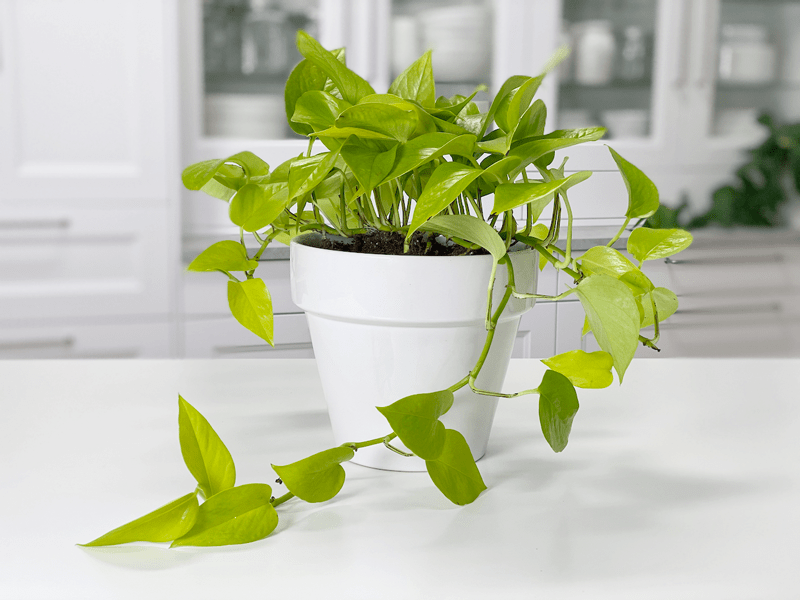

Pothos | Neon Pothos Plant | Care Difficulty – Moderate
Neon pothos (Epipremnum aureum ‘Neon’) is one of the most distinct varieties of this plant. Its heart-shaped leaves are bright chartreuse or golden yellow in color with no variegation. The newer, younger leaves tend to be brighter than older leaves. The foliage deepens in color with age. To get the best color, grow neon pothos in bright light. In low-light spots, the color will be duller and darker.

The neon pothos looks great grown in containers and hanging baskets. I love intermixing it with my other plants due to its wonderful color contrast. This wasn’t always the case– at first, I was turned off by their bright yellow/green color, but once I started grouping plants, I found that the contrast to other green plants created a lush look.
These plants are native to French Polynesia and when grown in their natural habitat, the leaves of a mature plant can grow to be longer than 3 feet. The leaves, not the vines! I can hardly wrap my head around that. I only have a couple of these plants, as they seem to be challenging to find in my local area. But that’s okay… hard to find plants come with greater appreciation.
Light Requirements
The neon pothos thrives in medium to low indirect light. It is not suited for intense, direct sun.
 Water Requirements
Water Requirements
Pothos plants perform best when they are watered regularly and when you allow the soil to dry somewhat between waterings. Don’t worry if you forget—it will occasionally tolerate a missed watering! BUT I don’t recommend doing this too often, as it might stress the plant.
Water every week or two, depending on the season. I find that my plants require less watering during the winter months, since most indoor plants go dormant. Of course, this all depends on where you live.
Here in Oregon, we experience four seasons and our winters can be rather warm. It’s also good to note that smaller potted plants will require more watering, since there isn’t much soil to hold moisture.
Personally, I let my pothos plants dry out to about 75% in between waterings. When I do water them, I take them to the sink and soak them all the way through until water runs out of the base of the pot.
Additional Care
- Remove any dead, discolored, damaged, or diseased leaves and stems as they occur with clean, sharp scissors. Snip stems just above a leaf node; new growth will emerge from this cut. I do this every time I water my pothos. I use the watering time to inspect my plants thoroughly.
- Clean the leaves often enough to keep dust off of them. You can wipe the plant down regularly with rubbing alcohol to deter insects from the plant.
Optimum Temperature
The neon pothos prefers average to warm temperatures of 60 to 80 degrees (F) degrees. Do not expose it to temperatures below 60 degrees even for a short time, because cold air will damage the foliage. Avoid cold drafts and heat vents.
Fertilizer – Plant Food
Feed monthly, spring through fall, with general-purpose indoor plant fertilizer. Advice about how often to feed houseplants is all over the board. If you overfeed your plants, they will let you know. Here are a few things to watch for:
- Yellowing or browning leaves.
- The top surface of the soil may be white or crusty.
- The leaves of the plant will start dropping off.
- The roots can begin to rot.
If you overfeed a plant, you can remove it from its current soil and repot it in fresh soil. This is undoubtedly the best way to get rid of the excess nutrients affecting your plant. Alternatively, you can flush the soil, which involves drenching the soil with water and letting it drain out. Repeat this several times to help the soil get rid of excess fertilizer.
Common Bugs to Watch For
If you want to have healthy houseplants, you MUST inspect them regularly. Every time I water a plant, I give it a quick look-over. Bugs/insects feeding on your plants reduces the plant sap and redirects nutrients from leaves. Some chew on the leaves, leaving holes in the leaves. Also watch for wilting, yellowing, distorted, or speckled leaves. They can quickly get out of hand and spread to your other plants.
IF you see ONE bug, trust me, there are more. So, take action right away. Some are brave enough to show their “faces” by hanging out on stems in plain sight. Others tend to hide out in the darnedest of places, like the crotch of a plant or in a leaf that has yet to unfurl.

- Mealybugs look like small balls of cotton. They can travel, slooooooowly, but they have a strong will and determination! Though they are slow-moving if any plant is touching another, there is a chance the mealybug will hitch a ride on a new leaf and spread. They breed like rabbits of the insect world. Females can deposit around 600 eggs in loose cottony masses, often on the underside of leaves or along stems.
- Scales are dark-colored bumps that are primarily immobile insects that stick themselves to stems and leaves. They are rather inconspicuous and don’t look like a typical insect. They can range in color but are most often brownish in appearance. They’re called “scales” primarily due to their scale-like appearance on a plant, due to waxy or armored coverings. They are often seen in clumps along a stem, sucking away at the plant’s juices with their spiky mouthpart.
- Aphids are more commonly seen if you place your plants outdoors. Aphids are indeed bugs. They are tiny insects that, along with black, also come in shades of yellow, green, brown, and pink. They are often found on the undersides of leaves.
- Spider mites are more common on houseplants. They are not insects – they are related to spiders. These appear to be tiny black or red moving dots. Spider mites are nearly invisible to the naked eye. You often need a magnifying lens to spot them, or you may just notice a reddish film across the bottom of the leaves, some webbing, or even some leaf damage, which usually results in reddish-brown spots on the leaf.
Plant Characteristics to Watch For
Diagnosing what is going wrong with your plant is going to take a little detective work, but even more patience! First of all, don’t panic, and don’t throw out a plant prematurely. Take a few deep breaths and work down the list of possible issues. Below, I am going to share some typical symptoms that can arise.
When I start to spot troubling signs on a plant, I take the plant into a room with good lighting, pull out my magnifiers, and start by thoroughly inspecting the plant.
Brown Leaf Tips
- Brown leaf tips may indicate that the air is too dry, and more humidity is required.
- The bathroom or kitchen would be an excellent choice for your neon pothos because it does best in a slightly more humid environment.
- If needed, you can add a room humidifier to your space.
Pale/Yellow Leaves
- Yellow leaves can also be a symptom of too much water.
- Solution: Allow the plant to dry out and then drench the soil, allowing the excess water to drain from the base. Pay more attention to your watering habits.
Pruning Tip for a Fuller Plant
Your plant will benefit from occasional pruning, which helps it to branch out and become fuller. Spring is the best time to cut it back. Use sharp pruners to avoid tearing the stems. I love the idea of pruning (cutting back vines) but I’ll be darned if I don’t tremble when holding the scissors! The payoff is rewarding (in time) but it feels like I am cutting my own hair which took too long to grow out. Are you feeling me?
Toxicity
Pothos are mildly toxic to pets and humans if ingested. It can cause a mild irritation to the mouth if chewed or swallowed and also a mild digestive reaction. It may also cause skin irritation. Keep the plant out of reach of animals and kiddos.
© AmieSue.com